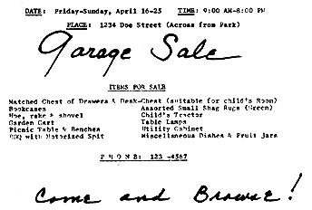
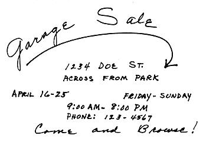

Since the term was coined shortly after World War II, "Garage Sale" has come to mean many things to many people. Originally, I believe, it meant cleaning out your garage and inviting the neighbors in to see if they would like to buy the things you were going to throw out anyhow. This was found to be so lucrative that the idea (as good ideas will) has spread and garage sales have become a part of our culture.
Knowing that such a sale can be successful and having one pay off for you can be two different things, however . . . and a lot of folks continue to pass up some easy "recycled" money just because they mistakenly believe that "nobody would be interested in my junk." We felt the same way . . . until a recent long distance move forced us into holding our first garage sale. Wonder of wonders! . . . it was so successful that we plan to have many more and we'd like to tell you all the "trade secrets" we learned from that first experience.
As we prepared for our crosscountry move we quickly realized that-with today's high cost of shipping-we couldn't afford to take one bit of dead weight with us. Unfortunately we literally had a garage full of the commodity: the beat-up end table I had planned to refinish for over five years; an old utility cabinet that should have been thrown out long before my mother-in-law gave it to us; the record stand with a cracked top; a toy tractor and red wagon our youngster no longer played with; assorted fruit jars; a lamp retrieved in the dim past from some dismantled office . . . and this was only a partial list.
My economical soul wouldn't tolerate paying someone to haul our mountain of memories to the dump so my first thought was to sell the whole mess at once to a second-hand furniture dealer. Several phone calls, however, soon taught me that the dealers were interested in only a few of our pieces . . . and willing to pay precious little for those.
One trader was finally honest enough to tell me, "The only way you can make any money on that stuff is by selling it yourself." Well, I at least had an idea of what the second-hand market for various items both was and wasn't.
Armed with that new knowledge, my husband and I decided to sell the accumulated "treasures and trash" ourselves . . . and we ran a garage sale ad in the local paper. This bit of experience was rather costly since we paid about $5.00 for the ad . . . and it brought practically no response at all.
Well! Getting rid of that stuff was becoming a real challenge but I wasn't beaten yet! I dusted off the typewriter, invested in some light green paper and a felt tip marker and "artistically" created some note-sized posters which I placed on every neighborhood grocery and laundromat bulletin board in the immediate vicinity. At least this advertising was virtually free!
The bulletin board notices aroused the interest of our six-year-old so I made up some "handbills" for him to distribute to the houses of his neighborhood friends. We even thumbtacked a few to telephone poles; I'm not sure it's legal to do this but we didn't get any repercussions. I did the handbills mostly to give our little boy a chance to participate . . . but we later found that those little slips of paper brought quite a few people to the sale.
Next I put up a huge cardboard sign in our yard (lettered darkly with my trusty marking pen). The information on a yard sign should be brief and easily read from a passing automobile.
Just when to hold a garage sale depends on your personal schedule. Since I was home all day we "never closed" from one weekend to the next. Maybe you'll be able to do that, maybe not. The important thing is to be sure your notices, handbills and yard sign are out for several days before the event begins. And use all three methods of attracting customers: in talking to people who phoned and came in, I found that the three ways of advertising were just about equally effective and I consider them all worthwhile.
We did little else to prepare for the sale other than put everything together in one area. We did no fixing, repairing or painting although I did make sure that everything was clean.
To the assorted junk from the garage I added all the household items I'd been wanting to get rid of for a long time: a cabinetful of dishware odds and ends, a couple of old shag rugs and a bedspread I just hated. The sale, in other words, gave me an excuse to get rid of a lot of things I'd always disliked . . . but never felt I could afford to throw away.
A word about prices: don't set them too high. Remember that you've already gotten good use from your sale items and the folks interested in buying the articles are looking for a bargain. Give them one.
The following pertinent information should be on your notice:
1. Date of the Sale-both days of the week and month i.e. Friday through Sunday, April 16-25.
2. Time-9:00 A.M. to 8:00 P.M.
3. Address where sale is to be held-identifying landmarks are helpful, if there are any.
4. Phone number.
5. Partial list of items for sale along with brief description.
6. Come and Browse . . . or words to that effect. Make people feel they can come and "snoop" even if they don't intend to buy . . . you never can tell.
An added tip: take along plenty of thumbtacks so you'll be sure to have something to post your notices with.
I found it wise not to put a fixed price on anything. I always had a good idea of what I felt was fair for some of the larger items (keeping in mind what I'd have to pay someone to haul it off if I didn't sell it), but my customers didn't know this. When anyone showed even the slightest interest in an article I would try to get him to make an offer (being careful not to quote a specific price myself). I found in most cases that the offer was more than I had expected to get and I would then "reluctantly" accept it anyhow.
This psychology seemed to work almost every time. If people think they're getting a bargain they'll buy almost anything. Of course, if I wasn't willing to sell an article for the amount bid, I would simply say so.
Then there's the "free gift" technique. If I couldn't get a prospective customer to make an offer I would sometimes quote a price myself rather than risk losing his interest. If he seemed to feel my quoted price was too high I generously threw in something else I was having trouble getting rid of anyhow. It often worked.
The articles that sold easiest were furniture (especially chests of drawers and bookcases), garden implements, BarB-Q equipment, outdoor furniture and children's toys. Many folks seemed to need tools and garbage cans. There was little interest in clothing, costume jewelry, purses, shoes and other personal items.
By the end of the second weekend we had sold almost everything we intended to sell . . . and a few things we hadn't! Things like a beat-up bed frame with mismatched springs and discolored mattress. I was actually ashamed to show the old bed to anyone and I hid it . . . until a young couple with a "bouncing" three-year-old offered me $8.00 on the spot for the "trampoline".
All in all, we realized over $250 from the sale of that junk and I haven't missed a bit of it since!
|
 SAMPLE NOTICE AND HANDBILL |
 |
|